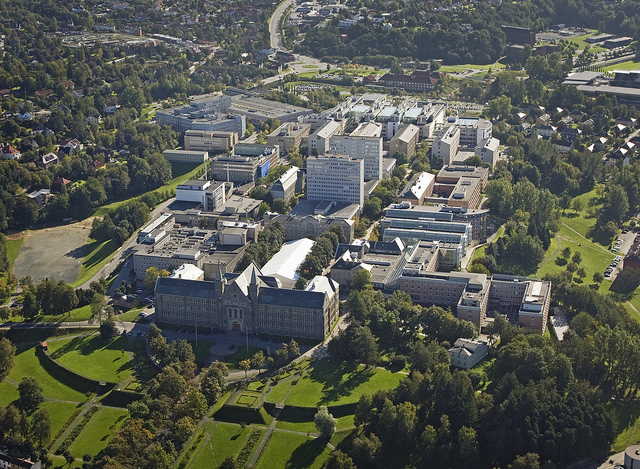

Velkommen til NTNU Gløshaugen!

Gløshaugen er et område ca. 2 km sørøst for Trondheim sentrum. I dag er Gløshaugen-platået best kjent som NTNUs største universitetsområde, campus NTNU Gløshaugen, med Hovedbygningen fra Norges tekniske høgskole (NTH) som et synlig landemerke fra flere steder i byen. Før NTH ble etablert, hadde området gjennom tidene vært brukt til både gårdsdrift, ekserserplass, landsteder og spesialskoler.
Etter at Stortinget i 1900 hadde vedtatt at det skulle opprettes en teknisk høyskole i Trondheim, og Gløshaugen var bestemt som tomt for skolen, ble det avholdt en arkitektkonkurranse om hovedbygning og tre laboratoriebygninger. Dette var de bygningene man mente det var behov for. Arkitekt Bredo Greves prosjekt og plan for området ble valgt for utførelse.